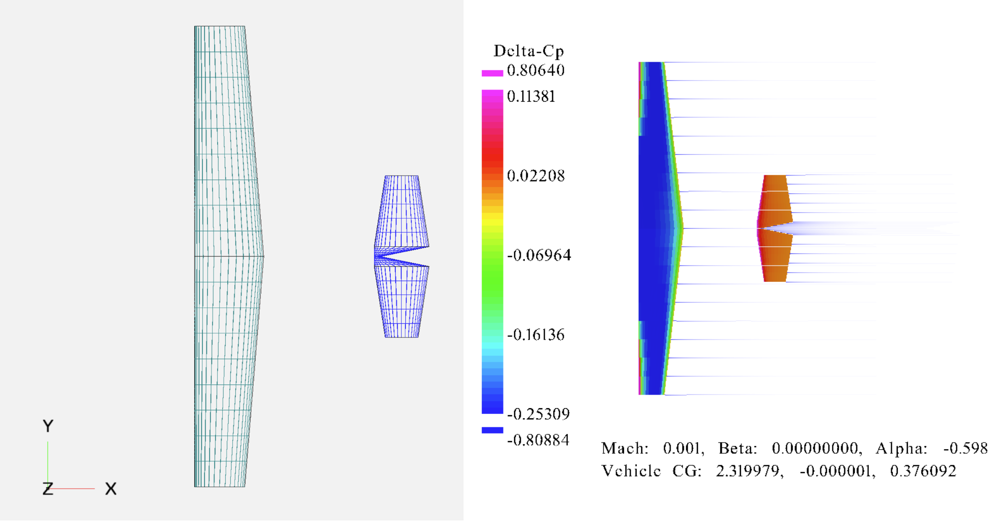
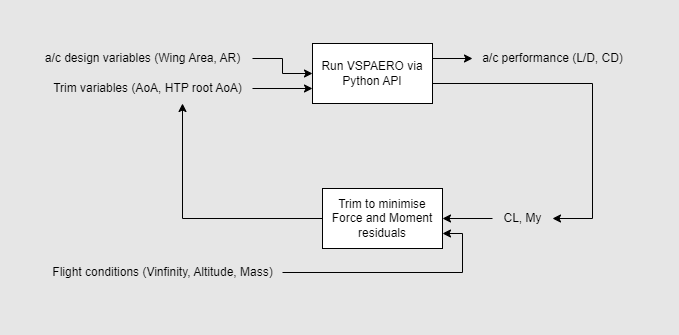
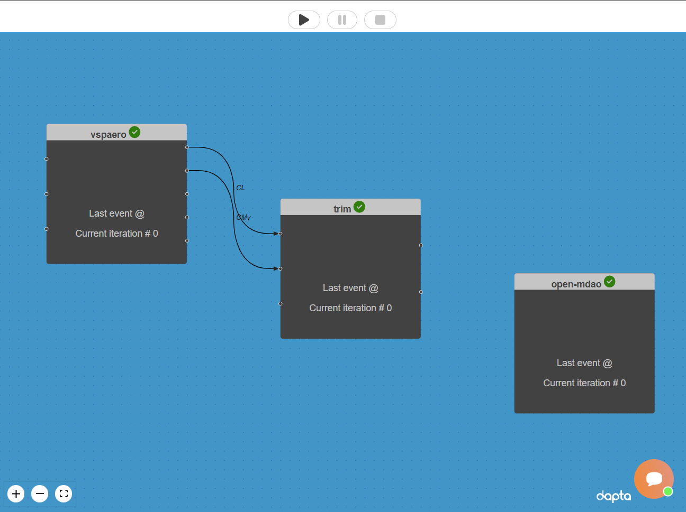
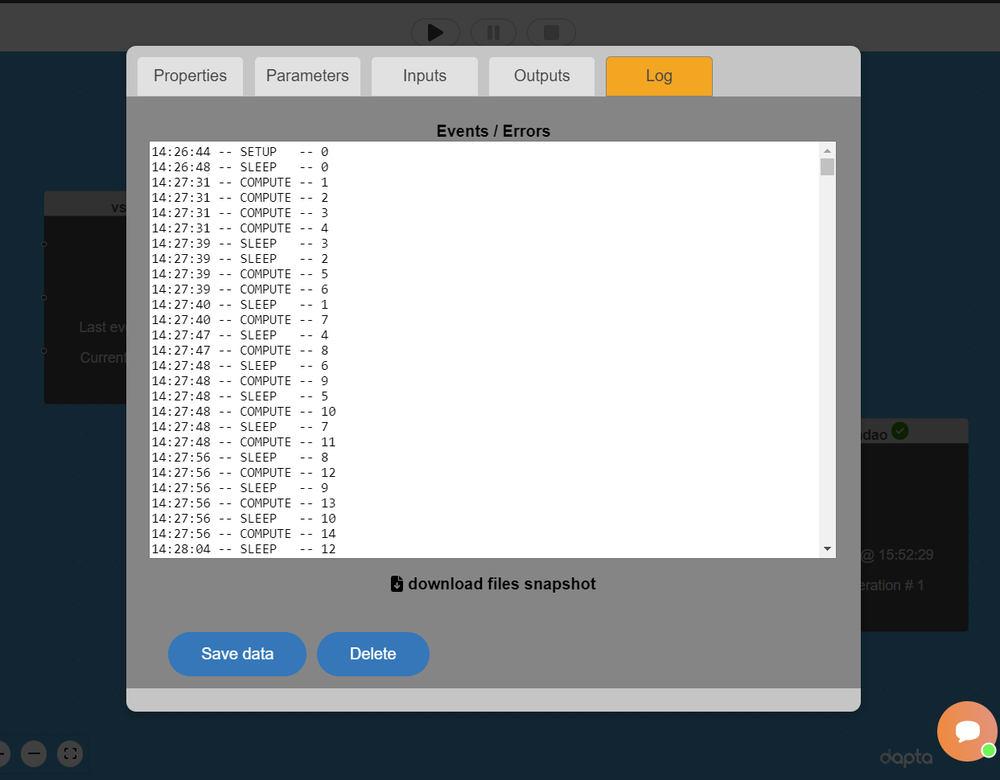
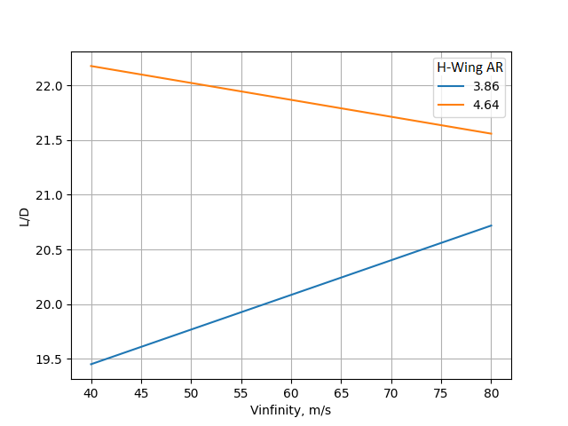
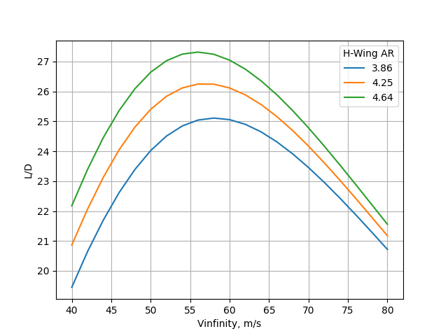

Using OpenVSP for aircraft performance analysis
Contents
8. Using OpenVSP for aircraft performance analysis#
Load tutorial into dapta app.
 View files on Github.
View files on Github.
{kind=link}
Duration: 60 min
In this example we create a simple aircraft performance analysis workflow using OpenVSP and OpenMDAO.
We also demonstrate how to execute components in parallel to speed up large parametric studies.
8.1. Problem description#
Theory tells us that an aircraft’s optimal cruise velocity for minimum thrust is where its lift to drag ratio (L/D) is maximised, which also corresponds to the flight velocity where the total drag (including lift-induced drag) is minimised. In this example, we wish to graphically determine this optimal cruise velocity for a Cessna 210 for a range of different wing aspect ratios, given a certain flight altitude and fixed aircraft total mass.
We use a representative OpenVSP aircraft model (Cessna-210_metric.vsp3) as shown above. The aircraft’s aerodynamic lift, drag and pitching moment coefficients are calculated using the vortex lattice method (VLM) implemented in the VSPAERO solver that comes with OpenVSP. The model is in SI units (m/s/kg). Only the wing and the horizontal tailplane (HTP) are modelled in the VLM analysis, with the input mesh and a example output pressure distribution shown below.
It is not necessary to install OpenVSP on your machine for this example, since most of the analysis input and output data can also be accessed by opening the files in a simple text editor. However, you will need to install OpenVSP if you want to run the component code locally since we will be using the OpenVSP python API in the next section.
{kind=link}
To determine the optimum flight velocity, we need to be able to perform multiple trimmed aircraft analyses for different cruise velocities and wing aspect ratios. The aircraft is trimmed in level flight when all forces and moments about the aircraft’s centre of gravity (CG) cancel out.
Unfortunately, VSPAERO only does part of the job for us. It allows us to calculate the aircraft’s aerodynamic coefficients for a certain configuration, but it can’t calculate the aircraft trim angle of attack (AoA) or the HTP angle required to balance the aero forces and moments out with the aircraft’s weight (assuming that thrust can be set to cancel out drag).
To solve this problem we can add a trim component to our simulation workflow as shown below. The trim component introduces a feedback cycle that adjusts the trim variables (AoA and HTP angles) based on the forces and moments at the aircraft’s CG. We can use Newton’s method to converge the cycle to a trimmed solution.
{kind=link}
Finally, we choose to use OpenMDAO as the driver component for our workflow for 3 main reasons:
It allows us to easily implement the trim analysis cycle mentioned above by using an ‘implicit’ component and variable promotion (where normal dapta design variable connections can only go forwards).
It includes nonlinear solvers, including a versatile Newton solver which can be used to converge the trim solution.
It allows us to set up a design of experiments workflow to iteratively solve the aircraft trim problem for different flight conditions and aircraft designs.
8.2. Create the components#
The following sections will guide you through the creation of the simulation workflow starting from an empty workspace. Already signed-up? Access your workspace here.
8.2.1. VSPAERO component#
The purpose of this component is to calculate the aerodynamic forces and moments about the aircraft’s CG for a given set of inputs and parameters. The inputs include the aircraft angle of attack (AoA), the HTP angle (HTP_RY) and the half-wing aspect ratio (desvars_PONPNSVRANE). Multiply the half-wing aspect ratio by 2 to recover an approximate full wing aspect ratio value (with the error due to dihedral angle).
Parameters include the OpenVSP model input file (Cessna-210_metric.vsp3), an OpenVSP design variables file (Cessna-210_metric.des) and a “HTP_RY_ID” lookup parameter. Note that the wing aspect ratio variable name and the value of the “HTP_RY_ID” parameter both refer to 11 character IDs from the OpenVPS design variables file instead of being hard-coded in the python script.
The compute.py module makes use of the OpenVSP python API to read the model files, to apply the input values to the model, to setup and execute the VSPAERO analysis and to recover the analysis outputs.
The API is contained in the vsp object that is imported at the top of the file (import openvsp as vsp).
Parallel execution: We use the “replicas” option on the Properties tab to create 4 independent copies of this component. This number should match the number of python threads set up in the OpenMDAO DOE driver.
Create the component:
Right-click in the workspace and select
Add Empty Node. Select the empty component to edit it.In the
Propertiestab, fill in the component name,vspaero, and select the OpenVSP component APIopenvsp-comp:latest.Copy the contents of the
setup.py,compute.py,Cessna-210_metric.vsp3andCessna-210_metric.desfiles from below into a text editor, save them locally. Then upload the first 2 files under thePropertiestab and upload the.vsp3and.desfiles under theParameterstab by selectingupload user input files.In the
Propertiestab copy the following JSON object into theOptionstext box:
{
"replicas": 4
}
Also in the
Propertiestab check the box next to theStart Nodeoption.Insert the following JSON object into the
Parameterstab text box (below the “user_input_files” entry):
{
"HTP_RY_ID": "ABCVDMNNBOE",
"vsp3_file": "Cessna-210_metric.vsp3",
"des_file": "Cessna-210_metric.des"
}
Copy the following JSON object into the
Inputstab text box:
{
"AoA": 0,
"HTP_RY": 0,
"desvars_PONPNSVRANE": 3.86
}
Copy the following JSON object into the
Outputstab text box:
{
"CL": 0,
"CMy": 0,
"CDtot": 0,
"L2D": 0,
"E": 0
}
Select
Save datato save and close the component.
import os
from datetime import datetime
from pathlib import Path
HOSTNAME = os.getenv("HOSTNAME")
def setup(
inputs: dict = {"design": {}, "implicit": {}, "setup": {}},
outputs: dict = {"design": {}, "implicit": {}, "setup": {}},
parameters: dict = {
"user_input_files": [],
"inputs_folder_path": "",
"outputs_folder_path": "",
},
) -> dict:
"""A user editable setup function."""
# initalise setup_data keys
response = {}
# delete previous run log
run_log = Path(parameters["outputs_folder_path"]) / f"run_{HOSTNAME}.log"
if run_log.is_file():
os.remove(run_log)
message = f"{datetime.now().strftime('%Y%m%d-%H%M%S')}: Setup completed on host {HOSTNAME}."
print(message)
response["message"] = message
return response
import os
from datetime import datetime
from pathlib import Path
from shutil import copy2
import time
from functools import wraps
from contextlib import redirect_stdout
import openvsp as vsp
stdout = vsp.cvar.cstdout
errorMgr = vsp.ErrorMgrSingleton_getInstance()
HOSTNAME = os.getenv("HOSTNAME")
def timeit(func):
@wraps(func)
def wrapper_timer(*args, **kwargs):
tic = time.perf_counter()
value = func(*args, **kwargs)
toc = time.perf_counter()
elapsed_time = toc - tic
print(
f"Elapsed time for function '{func.__name__}': {elapsed_time:0.4f} seconds"
)
return value
return wrapper_timer
def compute(
inputs: dict = {"design": {}, "implicit": {}, "setup": {}},
outputs: dict = {"design": {}, "implicit": {}, "setup": {}},
partials: dict = {},
options: dict = {},
parameters: dict = {
"user_input_files": [],
"inputs_folder_path": "",
"outputs_folder_path": "",
},
) -> dict:
"""Wrapper around main function."""
run_log = Path(parameters["outputs_folder_path"]) / f"run_{HOSTNAME}.log"
with open(run_log, "a", encoding="utf-8") as f:
with redirect_stdout(f):
resp = main(inputs, outputs, partials, options, parameters)
return resp
@timeit
def main(
inputs: dict = {"design": {}, "implicit": {}, "setup": {}},
outputs: dict = {"design": {}, "implicit": {}, "setup": {}},
partials: dict = {},
options: dict = {},
parameters: dict = {
"user_input_files": [],
"inputs_folder_path": "",
"outputs_folder_path": "",
},
) -> dict:
"""A user editable compute function."""
print(f"Starting VSPAERO run on {HOSTNAME} with: ", inputs["design"])
# check that input files have been uploaded
inputs_folder = Path(parameters["inputs_folder_path"])
for file in ["vsp3_file", "des_file"]:
if not (inputs_folder / parameters[file]).is_file():
raise FileNotFoundError(
f"{parameters[file]} needs to be uploaded by the user."
)
# copy input files to run folder
run_folder = Path(parameters["outputs_folder_path"])
for file in parameters["user_input_files"]: # .vsp3 and .des files
src = inputs_folder / file["filename"]
copy2(src, run_folder / file["filename"])
vsp_file = run_folder / parameters["vsp3_file"]
des_file = run_folder / parameters["des_file"]
# get inputs
desvars = {
k.split("_", 1)[1]: v
for k, v in inputs["design"].items()
if k.startswith("desvars_")
}
AoA = inputs["design"]["AoA"]
# dynamically update trim desvars with input values
desvars[parameters["HTP_RY_ID"]] = float(inputs["design"]["HTP_RY"])
vsp.ClearVSPModel()
vsp.Update()
# read vsp3 input file
vsp.ReadVSPFile(str(vsp_file))
vsp.Update()
# load the default OpenVSP design variables
vsp.ReadApplyDESFile(str(des_file))
vsp.Update()
# get / set specific parameters by id - optional
if desvars:
for k, v in desvars.items():
# vsp.GetParmVal(k)
vsp.SetParmValUpdate(k, v)
# create _DegenGeom.csv file input for VLM
analysis_name = "VSPAEROComputeGeometry"
vsp.SetAnalysisInputDefaults(analysis_name)
method = list(vsp.GetIntAnalysisInput(analysis_name, "AnalysisMethod"))
method[0] = vsp.VORTEX_LATTICE
vsp.SetIntAnalysisInput(analysis_name, "AnalysisMethod", method)
# vsp.PrintAnalysisInputs(analysis_name)
vsp.ExecAnalysis(analysis_name)
# vsp.PrintResults(resp)
# setup VSPAERO - preconfigure everything else in the vsp3 file
analysis_name = "VSPAEROSweep"
vsp.SetAnalysisInputDefaults(analysis_name)
wid = vsp.FindGeomsWithName("NormalWing")
vsp.SetStringAnalysisInput(analysis_name, "WingID", wid, 0)
vsp.SetDoubleAnalysisInput(analysis_name, "AlphaStart", (float(AoA),), 0)
vsp.SetIntAnalysisInput(analysis_name, "AlphaNpts", (1,), 0)
vsp.SetDoubleAnalysisInput(analysis_name, "MachStart", (0.0,), 0)
vsp.SetIntAnalysisInput(analysis_name, "MachNpts", (1,), 0)
vsp.Update()
# # vsp.PrintAnalysisInputs(analysis_name)
vsp.ExecAnalysis(analysis_name)
# vsp.PrintResults(resp)
# process outputs
history_res = vsp.FindLatestResultsID("VSPAERO_History")
# load_res = vsp.FindLatestResultsID("VSPAERO_Load")
CL = vsp.GetDoubleResults(history_res, "CL", 0)
CDtot = vsp.GetDoubleResults(history_res, "CDtot", 0)
L2D = vsp.GetDoubleResults(history_res, "L/D", 0)
E = vsp.GetDoubleResults(history_res, "E", 0)
# cl = vsp.GetDoubleResults( load_res, "cl", 0 )
CMy = vsp.GetDoubleResults(history_res, "CMy", 0)
while errorMgr.GetNumTotalErrors() > 0:
errorMgr.PopErrorAndPrint(stdout)
outputs["design"]["CL"] = CL[-1]
outputs["design"]["CMy"] = CMy[-1]
outputs["design"]["CDtot"] = CDtot[-1]
outputs["design"]["L2D"] = L2D[-1]
outputs["design"]["E"] = E[-1]
message = f"{datetime.now().strftime('%Y%m%d-%H%M%S')}: VSPAERO Compute completed on host {HOSTNAME}."
print(message)
print(f"with:\nINPUTS: {str(inputs)},\nOUTPUTS: {str(outputs)}.")
return {"message": message, "outputs": outputs}
if __name__ == "__main__":
# for local testing only
design_inputs = {"AoA": 0.0, "HTP_RY": 0.0, "desvars_PONPNSVRANE": 3.86}
outputs = {"CL": 0.0, "CMy": 0.0, "CDtot": 0.0, "L2D": 0.0, "E": 0.0}
options = {}
parameters = {
"desvars": {"PONPNSVRANE": 3.86},
"AoA": 0.0,
"HTP_RY": 0.0,
"HTP_RY_ID": "ABCVDMNNBOE",
"vsp3_file": "Cessna-210_metric.vsp3",
"des_file": ".des",
"outputs_folder_path": "../outputs",
"inputs_folder_path": "../inputs",
"user_input_files": [".des", "Cessna-210_metric.vsp3"],
}
response = main(
inputs={"design": design_inputs},
outputs={"design": outputs},
partials=None,
options=options,
parameters=parameters,
)
3
BMZJCENVRIX:Default:VSPAERO:NCPU: 1
ABCVDMNNBOE:Horz:XForm:Y_Rel_Rotation: -2.5
PONPNSVRANE:NormalWing:XSec_1:Aspect: 3.86435
8.2.2. Trim component#
This is a simple analytical implicit component that calculates the force and pitching moment residuals at the aircraft CG. The inputs are the lift and pitching moment coefficients from the vspaero component and the flight velocity (Vinfinity). Fixed parameters include the aircraft total mass, flight altitude and wing reference area (S).
Note that OpenMDAO implicit components don’t usually have a compute function.
By inspecting the OM_component.py file in the OpenMDAO component below, we can see that the trim component’s compute function is actually called from within the implicit component’s apply_nonlinear method.
The OpenMDAO Advanced user guide explains the structure and purpose of implicit components in more detail.
Parallel execution: This component is not parallelised as it executes quickly compared to the vspaero analysis.
Create the component:
Right-click in the workspace and select
Add Empty Node. Select the empty component to edit it.In the
Propertiestab, fill in the component name,trim, and select the generic python component APIgeneric-python3-comp:latest.Copy the contents of the
setup.py,compute.pyandrequirements.txtfiles from below into a text editor, save them locally. Then upload them under thePropertiestab.Also in the
Propertiestab check the box next to theEnd Nodeoption.Insert the following JSON object into the
Parameterstab text box (below the “user_input_files” entry):
{
"Mass": 1111,
"Altitude": 3000,
"S": 16.234472
}
Copy the following JSON object into the
Inputstab text box:
{
"CL": 0,
"CMy": 0,
"Vinfinity": 40
}
Copy the following JSON object into the
Outputstab text box:
{
"AoA": 0,
"HTP_RY": 0
}
Select
Save datato save and close the component.
from datetime import datetime
def setup(
inputs: dict = {"design": {}, "implicit": {}, "setup": {}},
outputs: dict = {"design": {}, "implicit": {}, "setup": {}},
parameters: dict = {
"user_input_files": [],
"inputs_folder_path": "",
"outputs_folder_path": "",
},
) -> dict:
"""A user editable setup function."""
# initalise setup_data keys
response = {}
message = f"{datetime.now().strftime('%Y%m%d-%H%M%S')}: Setup completed."
print(message)
response["message"] = message
return response
from datetime import datetime
from fluids.atmosphere import ATMOSPHERE_1976
def compute(
inputs: dict = {"design": {}, "implicit": {}, "setup": {}},
outputs: dict = {"design": {}, "implicit": {}, "setup": {}},
partials: dict = {},
options: dict = {},
parameters: dict = {
"user_input_files": [],
"inputs_folder_path": "",
"outputs_folder_path": "",
},
) -> dict:
"""A user editable compute function."""
print(f"Starting residuals check.")
g = 9.81 # gravity acceleration in m/s**2
rho = ATMOSPHERE_1976(parameters["Altitude"]).rho
m = parameters["Mass"]
s = parameters["S"]
v = inputs["design"]["Vinfinity"]
CL_target = 2 * m * g / (rho * v**2 * s)
outputs["design"]["AoA"] = inputs["design"]["CL"] - CL_target
outputs["design"]["HTP_RY"] = inputs["design"]["CMy"]
message = (
f"{datetime.now().strftime('%Y%m%d-%H%M%S')}: Trim residual compute completed."
)
print(message)
print(f"with:\nINPUTS: {str(inputs)},\nOUTPUTS: {str(outputs)}.")
return {"message": message, "outputs": outputs}
if __name__ == "__main__":
# for local testing only
design_inputs = {"CL": 0.0, "CMy": 0.0, "Vinfinity": 40.0}
outputs = {"AoA": 0.0, "HTP_RY": 0.0}
options = {}
parameters = {"Mass": 1111.0, "Altitude": 3000.0, "Vinfinity": 40.0, "S": 16.234472}
response = compute(
inputs={"design": design_inputs},
outputs={"design": outputs},
partials=None,
options=options,
parameters=parameters,
)
fluids==1.0.22
8.2.3. OpenMDAO driver component#
The driver component is identical to the OpenMDAO component used in the Simple optimisation problem example, except for the driver parameters (defined on the Parameters tab), which have been adjusted for this problem:
The driver type is set to “doe” instead of “optimisation” to request a sweep of the design space. In the
compute.pymodule, this selects the use of the OpenMDAO “FullFactorialGenerator” to define the design points to evaluate. The number of design points can be increased via the {“driver”:{“kwargs”:{“levels”:{“Vinfinity”: 2, “desvars_PONPNSVRANE”: 2}}}} parameter values (minimum of 2 points per design variable).The design space is defined by the “input_variables” object, listing upper and lower values for the flight velocity range (Vinfinity) and for the wing aspect ratio range (desvars_PONPNSVRANE).
We define a OpenMDAO group object named “cycle”, which has both a nonlinear solver and linear solver attached. By referencing this group by name in the vspaero and trim component entries (under “ExplicitComponents” and “ImplicitComponents”), these components are automatically included in the cycle group.
The trim variables (“AoA” and “HTP_RY”) feedback connection is implemented by promotion of the variables as inputs in the vspaero component and as outputs in the trim component.
The {“visualise”:”plot_history”} option here is used to call a custom plotting function imported from the
post.pyuser file.
Parallel execution: We use the {“driver”:{“nb_threads”:4}} parameter to create 4 python execution threads, each launching a quarter of the design cases (using a modified OpenMDAO DOEDriver class, defined in the compute.py module). The number of doe threads should match the number of vspaero replicas set up earlier.
To create the driver component:
Right-click in the workspace and select
Add Empty Node. Select the empty component to edit it.In the
Propertiestab, fill in the component name,open-mdao, and select the component APIgeneric-python3-driver:latest.Copy the contents of the
setup.py,compute.py,requirements.txtfiles from below into a text editor, save them locally. Then upload them under thePropertiestab.In the
Propertiestab check the box next to theDriveroption.Copy the contents of the parameters JSON object below into the
Parameterstab text box.Copy the contents of the
om_component.pyandpost.pyfiles from below into a text editor and save them locally. Then upload them under theParameterstab by selectingupload user input files.Select
Save datato save and close the component.
from datetime import datetime
from pathlib import Path
def setup(
inputs: dict = {"design": {}, "implicit": {}, "setup": {}},
outputs: dict = {"design": {}, "implicit": {}, "setup": {}},
parameters: dict = {
"user_input_files": [],
"inputs_folder_path": "",
"outputs_folder_path": "",
},
) -> dict:
"""Editable setup function."""
if "driver" not in parameters:
# assume we want to run an optimisation with default settings
parameters["driver"] = {"type": "optimisation"}
message = f"{datetime.now().strftime('%Y%m%d-%H%M%S')}: Setup completed."
return {"message": message, "parameters": parameters}
from datetime import datetime
from pathlib import Path
import traceback
from contextlib import redirect_stdout
import numpy as np
import json
from copy import deepcopy
from concurrent.futures import ThreadPoolExecutor
import openmdao.api as om
from matplotlib import pyplot as plt # type: ignore
from om_component import OMexplicitComp, OMimplicitComp # type: ignore
OM_DEFAULTS = {
"nonlinear_solver": {
"class": om.NewtonSolver,
"kwargs": {"solve_subsystems": False},
},
"linear_solver": {
"class": om.DirectSolver,
"kwargs": {},
},
}
def compute(
inputs: dict = {"design": {}, "implicit": {}, "setup": {}},
outputs: dict = {"design": {}, "implicit": {}, "setup": {}},
partials: dict = {},
options: dict = {},
parameters: dict = {
"user_input_files": [],
"inputs_folder_path": "",
"outputs_folder_path": "",
},
) -> dict:
"""Editable compute function."""
print("OpenMDAO problem setup started.")
workflow = parameters["workflow"]
run_folder = Path(parameters["outputs_folder_path"])
all_connections = parameters.get("all_connections", [])
# 1) define the simulation components
prob = om.Problem()
# add groups
groups = {}
if "Groups" in parameters:
for group in parameters["Groups"]:
name = reformat_compname(group["name"])
kwargs = group.get("kwargs", {})
groups[name] = prob.model.add_subsystem(
name,
om.Group(),
**kwargs,
)
if "solvers" in group:
for solver in group["solvers"]:
if solver["type"] == "nonlinear_solver":
groups[name].nonlinear_solver = OM_DEFAULTS["nonlinear_solver"][
"class"
](**OM_DEFAULTS["nonlinear_solver"]["kwargs"])
solver_obj = groups[name].nonlinear_solver
elif solver["type"] == "linear_solver":
groups[name].linear_solver = OM_DEFAULTS["linear_solver"][
"class"
](**OM_DEFAULTS["linear_solver"]["kwargs"])
solver_obj = groups[name].nonlinear_solver
else:
raise ValueError(
f"Solver of type {solver['type']} is not implemented."
)
if "options" in solver:
for option, val in solver["options"].items():
if option in ["iprint", "maxiter"]:
solver_obj.options[option] = int(val)
else:
solver_obj.options[option] = val
# add components
def get_comp_by_name(name, objs: dict):
comp_type_lookup = {
"ExplicitComponents": OMexplicitComp,
"ImplicitComponents": OMimplicitComp,
}
for key, obj in objs.items():
filtered = [comp_obj for comp_obj in obj if comp_obj["name"] == name]
if filtered:
return [comp_type_lookup[key], filtered[0]]
return OMexplicitComp, None # default
model_lookup = {}
for component in workflow:
# defaults
kwargs = {}
fd_step = 0.1
model = prob.model
has_compute_partials = True # set this to False if fd gradients should be used
objs = {
k: parameters[k]
for k in ["ExplicitComponents", "ImplicitComponents"]
if k in parameters
}
comp_type, comp_obj = get_comp_by_name(component, objs)
if comp_obj:
kwargs = comp_obj.get("kwargs", kwargs)
fd_step = comp_obj.get("fd_step", fd_step)
has_compute_partials = comp_obj.get(
"has_compute_partials", has_compute_partials
)
model = groups.get(comp_obj.get("group"), model)
model_lookup[component] = model
model.add_subsystem(
reformat_compname(component),
comp_type(
compname=component,
fd_step=fd_step,
has_compute_partials=has_compute_partials,
),
**kwargs,
)
if "ExecComps" in parameters and parameters["ExecComps"]:
for component in parameters["ExecComps"]:
prob.model.add_subsystem(
reformat_compname(component["name"]),
om.ExecComp(component["exprs"]),
**component["kwargs"],
)
# 2) define the component connections
def get_var_str(c, name):
return f"{reformat_compname(c)}.{name.replace('.','-')}"
for connection in all_connections:
if connection["type"] == "design":
prob.model.connect(
get_var_str(connection["origin"], connection["name_origin"]),
get_var_str(connection["target"], connection["name_target"]),
)
if parameters["driver"]["type"] == "optimisation":
# 3) setup the optimisation driver options
prob.driver = om.ScipyOptimizeDriver()
prob.driver.options["optimizer"] = parameters["optimizer"]
prob.driver.options["maxiter"] = parameters["max_iter"]
prob.driver.options["tol"] = parameters["tol"]
prob.driver.opt_settings["disp"] = parameters["disp"]
prob.driver.options["debug_print"] = parameters["debug_print"]
if "approx_totals" in parameters and parameters["approx_totals"]:
# ensure FD gradients are used
prob.model.approx_totals(
method="fd", step=parameters["fd_step"], form=None, step_calc=None
)
elif parameters["driver"]["type"] == "doe":
# 3) alternative: setup a design of experiments
levels = parameters["driver"]["kwargs"].get("levels", 2)
if isinstance(levels, float): # All have the same number of levels
levels = int(levels)
elif isinstance(levels, dict): # Different DVs have different number of levels
levels = {k: int(v) for k, v in levels.items()}
prob.driver = DOEDriver(
om.FullFactorialGenerator(levels=levels),
reset_vars=parameters["driver"]["kwargs"].get("reset_vars", {}),
store_case_data=parameters["driver"]["kwargs"].get("store_case_data", {}),
store_parameters=parameters["driver"]["kwargs"].get("store_parameters", {}),
run_folder=run_folder,
)
# 4) add design variables
if "input_variables" in parameters:
for var in parameters["input_variables"]:
upper = var["upper"]
lower = var["lower"]
if "component" in var:
comp_obj = reformat_compname(var["component"])
prob.model.add_design_var(
f"{comp_obj}.{var['name'].replace('.', '-')}",
lower=lower,
upper=upper,
)
else:
prob.model.add_design_var(
var["name"].replace(".", "-"), lower=lower, upper=upper
)
val_default = var.get("value", lower)
prob.model.set_input_defaults(
var["name"].replace(".", "-"), val_default
)
# 5) add an objective and constraints
if "output_variables" in parameters:
for var in parameters["output_variables"]:
comp_obj = reformat_compname(var["component"])
name = f"{comp_obj}.{var['name'].replace('.', '-')}"
# set scaling from parameter input file
scaler = var.get("scaler", None)
adder = var.get("adder", None)
if var["type"] == "objective":
prob.model.add_objective(name, scaler=scaler, adder=adder)
elif var["type"] == "constraint":
lower = var.get("lower", None)
upper = var.get("upper", None)
prob.model.add_constraint(
name, lower=lower, upper=upper, scaler=scaler, adder=adder
)
prob.setup() # required to generate the n2 diagram
print("OpenMDAO problem setup completed.")
if "visualise" in parameters and "n2_diagram" in parameters["visualise"]:
# save n2 diagram in html format
om.n2(
prob,
outfile=str(run_folder / "n2.html"),
show_browser=False,
)
if parameters["driver"]["type"] == "optimisation":
dict_out = run_optimisation(prob, parameters, run_folder)
# elif parameters["driver"]["type"] == "check_partials":
# dict_out = run_check_partials(prob, parameters)
# elif parameters["driver"]["type"] == "check_totals":
# dict_out = run_check_totals(prob, parameters)
elif parameters["driver"]["type"] == "doe":
nb_threads = int(parameters["driver"].get("nb_threads", 1))
dict_out = run_doe(prob, parameters, run_folder, nb_threads=nb_threads)
# elif parameters["driver"]["type"] == "post":
# dict_out = run_post(prob, parameters)
else:
with open(run_folder / "trim_convergence.log", "w") as f:
with redirect_stdout(f):
prob.run_model()
dict_out = {}
message = f"{datetime.now().strftime('%Y%m%d-%H%M%S')}: OpenMDAO compute completed."
print(message)
if dict_out:
outputs["design"] = dict_out
return {"message": message, "outputs": outputs}
def run_optimisation(prob, parameters, run_folder):
# 6) add a data recorder to the optimisation problem
r_name = str(
run_folder
/ (
"om_problem_recorder_"
+ datetime.now().strftime("%Y%m%d-%H%M%S")
+ ".sqlite"
)
)
r = om.SqliteRecorder(r_name)
prob.driver.add_recorder(r)
prob.driver.recording_options["record_derivatives"] = True
# setup the problem again
prob.setup()
if "visualise" in parameters and "scaling_report" in parameters["visualise"]:
# NOTE: running the model can generate large large amounts of stored data in orchestrator, which
# can cause prob.setup() to fail if it is called again, so only execute
# prob.run_model() after all setup has been completed
with open(run_folder / "scaling_report.log", "w") as f:
with redirect_stdout(f):
prob.run_model()
prob.driver.scaling_report(
outfile=str(run_folder / "driver_scaling_report.html"),
title=None,
show_browser=False,
jac=True,
)
# 7) execute the optimisation
try:
with open(run_folder / "run_driver.log", "w") as f:
with redirect_stdout(f):
prob.run_driver()
except Exception as e:
print(f"run driver exited with error: {e}")
tb = traceback.format_exc()
raise ValueError("OpenMDAO Optimisation error: " + tb)
opt_output = {}
# print("Completed model optimisation - solution is: \n inputs= (")
for var in parameters["input_variables"]:
name = var["name"]
# print(
# f"{comp}.{name}: "
# + str(prob.get_val(f"{comp}.{name.replace('.', '-')}"))
# + " "
# )
if "component" in var:
comp = var["component"]
opt_output[f"{comp}.{name}"] = prob.get_val(
f"{reformat_compname(comp)}.{name.replace('.', '-')}"
).tolist()
else:
opt_output[name] = prob.get_val(name.replace(".", "-")).tolist()
# print("), \n outputs = (")
for var in parameters["output_variables"]:
comp = var["component"]
name = var["name"]
# print(
# f"{comp}.{name}: "
# + str(prob.get_val(f"{comp}.{name.replace('.', '-')}"))
# + " "
# )
opt_output[f"{comp}.{name}"] = prob.get_val(
f"{reformat_compname(comp)}.{name.replace('.', '-')}"
).tolist()
# print(")")
print(opt_output)
if "visualise" in parameters and "plot_history" in parameters["visualise"]:
post_process_optimisation(parameters, run_folder, r_name)
return opt_output
def run_doe(prob, parameters, run_folder, nb_threads=1):
# 7) execute the driver in parallel
def run_cases_thread(color):
print(f"Starting thread {color}.")
prob_copy = deepcopy(prob)
print(f"problem id for color {color}: ", id(prob_copy))
# set driver instance properties
prob_copy.driver.nb_threads = nb_threads
prob_copy.driver.color = color
try:
prob_copy.run_driver()
except Exception as e:
print(f"run driver exited with error: {e}")
tb = traceback.format_exc()
return f"OpenMDAO DOE error: {tb}"
print(f"Completed thread {color}.")
with open(run_folder / f"run_driver.log", "w") as f:
with redirect_stdout(f):
with ThreadPoolExecutor(max_workers=nb_threads) as executor:
msgs = executor.map(run_cases_thread, range(nb_threads))
errors = list(msgs)
if errors and errors[0]:
raise ValueError(errors[0])
print("completed all threads")
if "visualise" in parameters and "plot_history" in parameters["visualise"]:
from post import post_process_doe
post_process_doe(
parameters,
run_folder,
files=[f"results_{c}.json" for c in range(nb_threads)],
)
return {}
def reformat_compname(name):
# openmdao doesn't allow "-" character in component names
return name.replace("-", "_")
def post_process_optimisation(
parameters, run_folder, r_name, only_plot_major_iter=True
):
# read database
# Instantiate your CaseReader
cr = om.CaseReader(r_name)
# Isolate "problem" as your source
driver_cases = cr.list_cases("driver", out_stream=None)
# plot the iteration history from the recorder data
inputs_history = {
key: []
for key in [
f"{reformat_compname(var['component'])}.{var['name'].replace('.', '-')}"
for var in parameters["input_variables"]
]
}
outputs_history = {
key: []
for key in [
f"{reformat_compname(var['component'])}.{var['name'].replace('.', '-')}"
for var in parameters["output_variables"]
]
}
for key in driver_cases:
case = cr.get_case(key)
if (only_plot_major_iter and case.derivatives) or not only_plot_major_iter:
# get history of inputs
for key in inputs_history:
inputs_history[key].append(case.outputs[key])
# get history of outputs
for key in outputs_history:
outputs_history[key].append(case.outputs[key])
# plot output in userfriendly fashion
_plot_iteration_histories(
inputs_history=inputs_history,
outputs_history=outputs_history,
run_folder=run_folder,
)
def _plot_iteration_histories(
inputs_history=None, outputs_history=None, run_folder=None
):
# plot input histories
for key in inputs_history:
input_data = inputs_history[key]
input_data = np.array(input_data)
iterations = range(input_data.shape[0])
plt.figure()
for data_series in input_data.T:
plt.plot(iterations, data_series, "-o")
plt.grid(True)
plt.title(key)
plt.savefig(str(run_folder / (key + ".png")))
# plot output histories
for key in outputs_history:
output_data = outputs_history[key]
output_data = np.array(output_data)
iterations = range(output_data.shape[0])
plt.figure()
for data_series in output_data.T:
plt.plot(iterations, data_series, "-o")
plt.grid(True)
plt.title(key)
plt.savefig(str(run_folder / (key + ".png")))
plt.show()
class DOEDriver(om.DOEDriver):
def __init__(
self,
generator=None,
reset_vars: dict = None,
store_case_data: list = None,
store_parameters: dict = None,
run_folder: Path = None,
**kwargs,
):
self.reset_vars = reset_vars
self.cases_store = []
self.store_case_data = store_case_data
self.store_parameters = store_parameters
self.run_folder = run_folder
self.nb_threads = 1
self.color = 0
super().__init__(generator=generator, **kwargs)
def run(self):
"""
Generate cases and run the model for each set of generated input values.
Returns
-------
bool
Failure flag; True if failed to converge, False is successful.
"""
self.iter_count = 0
self._quantities = []
# set driver name with current generator
self._set_name()
# Add all design variables
dv_meta = self._designvars
self._indep_list = list(dv_meta)
# Add all objectives
objs = self.get_objective_values()
for name in objs:
self._quantities.append(name)
# Add all constraints
con_meta = self._cons
for name, _ in con_meta.items():
self._quantities.append(name)
for case in self._parallel_generator(self._designvars, self._problem().model):
print(f"Starting case on thread {self.color}.")
self._custom_reset_variables()
self._run_case(case)
self.iter_count += 1
self._custom_store_to_json()
return False
def _custom_reset_variables(self):
# reset the initial variable guesses
for k, v in self.reset_vars.items():
self._problem()[k] = v
def _custom_store_to_json(self):
# store the outputs to the json database
self.cases_store.append(
{
**self.store_parameters,
**{
k.split(".")[-1]: self._problem()[k][0]
for k in self.store_case_data
},
}
)
# dump to json file
fname = f"results_{self.color}.json"
with open(self.run_folder / fname, "w", encoding="utf-8") as f:
json.dump(self.cases_store, f)
def _parallel_generator(self, design_vars, model=None):
"""
Generate case for this thread.
Parameters
----------
design_vars : dict
Dictionary of design variables for which to generate values.
model : Group
The model containing the design variables (used by some generators).
Yields
------
list
list of name, value tuples for the design variables.
"""
size = self.nb_threads
color = self.color
generator = self.options["generator"]
for i, case in enumerate(generator(design_vars, model)):
if i % size == color:
yield case
if __name__ == "__main__":
with open("open-mdao-driver/parameters.json", "r") as f:
parameters = json.load(f)
parameters["all_connections"] = [
{
"origin": "vspaero",
"name_origin": "CL",
"target": "trim",
"name_target": "CL",
"type": "design",
},
{
"origin": "vspaero",
"name_origin": "CMy",
"target": "trim",
"name_target": "CMy",
"type": "design",
},
]
parameters["workflow"] = ["vspaero", "trim"] # defined by controller
parameters["outputs_folder_path"] = "outputs" # defined by component generic api
compute(
inputs={},
outputs={"design": {}},
partials=None,
options=None,
parameters=parameters,
)
numpy==1.23.5
openmdao==3.16.0
matplotlib==3.7.0
fluids==1.0.22
pandas==1.5.3
{
"Groups": [
{
"name": "cycle",
"solvers": [
{
"type": "nonlinear_solver",
"options": {
"iprint": 2,
"maxiter": 10,
"rtol": 0.001
}
},
{
"type": "linear_solver"
}
],
"kwargs": {
"promotes": [
"*"
]
}
}
],
"ExplicitComponents": [
{
"name": "vspaero",
"group": "cycle",
"kwargs": {
"promotes_inputs": [
"AoA",
"HTP_RY",
"desvars_PONPNSVRANE"
]
},
"fd_step": 0.01,
"has_compute_partials": false
}
],
"ImplicitComponents": [
{
"name": "trim",
"group": "cycle",
"kwargs": {
"promotes_inputs": [
"Vinfinity"
],
"promotes_outputs": [
"AoA",
"HTP_RY"
]
},
"fd_step": 0.01
}
],
"driver": {
"type": "doe",
"kwargs": {
"reset_vars": {
"cycle.vspaero.AoA": 0.0,
"cycle.vspaero.HTP_RY": 0.0,
"cycle.trim.CL": 0.5,
"cycle.trim.CMy": 0.0
},
"levels": {
"Vinfinity": 2,
"desvars_PONPNSVRANE": 2
},
"store_parameters": {
"Mass": 1111,
"Altitude": 3000,
"S": 16.234472
},
"store_case_data": [
"cycle.vspaero.AoA",
"cycle.vspaero.HTP_RY",
"cycle.vspaero.CDtot",
"cycle.vspaero.L2D",
"cycle.vspaero.E",
"cycle.vspaero.desvars_PONPNSVRANE",
"cycle.trim.CL",
"cycle.trim.CMy",
"cycle.trim.Vinfinity"
]
},
"post": {
"case_outputs_keys": [
"CL",
"CMy",
"CDtot",
"L2D",
"AoA",
"E"
],
"plt_x_label": "Vinfinity",
"columns": "desvars_PONPNSVRANE",
"variable_names": {
"Mass": "Mass, kg",
"Altitude": "Altitude, m",
"S": "Wing S, sqm",
"Vinfinity": "Vinfinity, m/s",
"desvars_PONPNSVRANE": "H-Wing AR",
"CL": "CL",
"CMy": "CMy",
"CDtot": "CDtot",
"L2D": "L/D",
"AoA": "AoA, degrees",
"E": "Oswald Efficiency Factor",
"drag_tot": "Drag, N"
}
},
"nb_threads": 4
},
"visualise": [
"n2_diagram",
"plot_history"
],
"input_variables": [
{
"name": "Vinfinity",
"lower": 40,
"upper": 80,
"value": 65
},
{
"name": "desvars_PONPNSVRANE",
"lower": 3.86,
"upper": 4.64,
"value": 3.86
}
]
}
""" Optimisation Component classes for OpenMDAO and associated utilities."""
import numpy as np
import openmdao.api as om # type: ignore
from component_api2 import call_compute, call_setup
import traceback
class OMexplicitComp(om.ExplicitComponent):
"""standard component that follows the OM conventions"""
def __init__(self, compname, fd_step, has_compute_partials=True):
super().__init__()
self.compname = compname
self.get_grads = False
self.iter = 0
self.partial_dict = None
self.fd_step = fd_step
self._has_compute_partials = has_compute_partials # overrides parent class attribute with user defined parameter
def setup(self):
message = {"component": self.compname}
_, component_dict = call_setup(message)
inputs = component_dict["input_data"]["design"]
outputs = component_dict["output_data"]["design"]
# initialise the inputs
if inputs:
for variable in inputs:
self.add_input(variable.replace(".", "-"), val=inputs[variable])
# initialise the outputs
if outputs:
for variable in outputs:
self.add_output(variable.replace(".", "-"), val=outputs[variable])
def setup_partials(self):
# Get the component partial derivative information
message = {"component": self.compname}
_, component_dict = call_setup(message)
if "partials" in component_dict and component_dict["partials"]:
self.partial_dict = component_dict["partials"]
for resp, vars in self.partial_dict.items():
for var, vals in vars.items():
self.declare_partials(
resp.replace(".", "-"), var.replace(".", "-"), **vals
)
else:
# calculate all paritials using finite differencing
self.declare_partials("*", "*", method="fd", step=self.fd_step)
def compute(self, inputs, outputs, discrete_inputs=None, discrete_outputs=None):
print("Calling compute.")
# calculate the outputs
# Note: transform all np.ndarrays into nested lists to allow formatting to json
input_dict = {"design": reformat_inputs(inputs._copy_views())}
message = {
"component": self.compname,
"inputs": input_dict,
"get_grads": False,
"get_outputs": True,
}
print("message: \n", str(message))
try:
_, data = call_compute(message)
if not "outputs" in data:
raise ValueError(f"Error: Compute output missing - output was: {data}.")
except Exception as e:
print(f"Compute of {self.compname} failed, input data was: {str(message)}")
tb = traceback.format_exc()
print(tb)
raise ValueError(
f"OM Explicit component {self.compname} compute error: " + tb
)
val_outputs = data["outputs"]["design"]
# OpenMDAO doesn't like the outputs dictionary to be overwritten, so
# assign individual outputs one at a time instead
for output in outputs:
outputs[output] = val_outputs[output.replace("-", ".")]
def compute_partials(self, inputs, J):
"""Jacobian of partial derivatives."""
print("Calling compute_partials.")
self.iter += 1
input_dict = reformat_inputs(inputs._copy_views())
message = {
"component": self.compname,
"inputs": input_dict,
"get_grads": True,
"get_outputs": False,
}
print("message: \n", str(message))
try:
_, data = call_compute(message)
if not "partials" in data:
raise ValueError(
f"Error: Compute partial derivatives missing - output was: {data}."
)
self.partial_dict = data["partials"]
except Exception as e:
print(
f"Compute partials of {self.compname} failed, input data was: {str(message)}"
)
tb = traceback.format_exc()
print(tb)
raise ValueError(
f"OM Explicit component {self.compname} compute error: " + tb
)
if self.partial_dict:
for resp, vars in self.partial_dict.items():
for var, vals in vars.items():
if "val" in vals:
J[resp.replace(".", "-"), var.replace(".", "-")] = vals["val"]
# print(dict(J))
else:
raise ValueError(f"Component {self.compname} has no Jacobian defined.")
class OMimplicitComp(om.ImplicitComponent):
"""standard implicit component that follows the OM conventions"""
def __init__(self, compname, fd_step, has_compute_partials=False):
super().__init__()
self.compname = compname
self.get_grads = False
self.iter = 0
self.partial_dict = None
self.fd_step = fd_step
def setup(self):
message = {"component": self.compname}
_, component_dict = call_setup(message)
inputs = component_dict["input_data"]["design"]
outputs = component_dict["output_data"]["design"]
# initialise the inputs
if inputs:
for variable in inputs:
self.add_input(variable.replace(".", "-"), val=inputs[variable])
# initialise the outputs
if outputs:
for variable in outputs:
self.add_output(variable.replace(".", "-"), val=outputs[variable])
def setup_partials(self):
message = {"component": self.compname}
_, component_dict = call_setup(message)
if "partials" in component_dict and component_dict["partials"]:
self.partial_dict = component_dict["partials"]
for resp, vars in self.partial_dict.items():
for var, vals in vars.items():
self.declare_partials(
resp.replace(".", "-"), var.replace(".", "-"), **vals
)
else:
# calculate all paritials using finite differencing
self.declare_partials("*", "*", method="fd", step=self.fd_step)
def apply_nonlinear(self, inputs, outputs, residuals):
input_dict = {"design": reformat_inputs(inputs._copy_views())}
message = {
"component": self.compname,
"inputs": input_dict,
"get_grads": False,
"get_outputs": True,
}
print("message: \n", str(message))
try:
_, data = call_compute(message)
if not "outputs" in data:
raise ValueError(f"Error: Compute output missing - output was: {data}.")
except Exception as e:
print(f"Compute of {self.compname} failed, input data was: {str(message)}")
tb = traceback.format_exc()
print(tb)
raise ValueError(
f"OM Explicit component {self.compname} compute error: " + tb
)
val_outputs = data["outputs"]["design"]
for output in outputs:
residuals[output] = val_outputs[output.replace("-", ".")]
def reformat_inputs(inputs):
input_dict = inputs
for key in [*input_dict.keys()]:
new_key = key.split(".")[-1].replace("-", ".")
input_dict[new_key] = input_dict.pop(key)
if isinstance(input_dict[new_key], np.ndarray):
input_dict[new_key] = input_dict[new_key].tolist()
return input_dict
from pathlib import Path
import pandas as pd
from matplotlib import pyplot as plt # type: ignore
from fluids.atmosphere import ATMOSPHERE_1976
def post_process_doe(
parameters=None,
run_folder=None,
files=["results.json"],
):
"""Plot VSPAERO outputs and save figures as pngs."""
case_outputs_keys = parameters["driver"]["post"]["case_outputs_keys"]
plt_x_label = parameters["driver"]["post"]["plt_x_label"]
columns = parameters["driver"]["post"]["columns"]
variable_names = parameters["driver"]["post"]["variable_names"]
df = pd.concat([pd.read_json(run_folder / file) for file in files])
df.sort_values(by=["Vinfinity"], inplace=True)
# calculate derived properties
df["rho"] = df.apply(lambda x: ATMOSPHERE_1976(x["Altitude"]).rho, axis=1)
df["drag_tot"] = df["CDtot"] * 1 / 2 * df["rho"] * df["Vinfinity"] ** 2 * df["S"]
case_outputs_keys.append("drag_tot")
for output in case_outputs_keys:
_, ax = plt.subplots()
for key, grp in df.groupby(columns):
ax = grp.plot(ax=ax, kind="line", x=plt_x_label, y=output, label=key)
plt.grid(True)
plt.xlabel(variable_names[plt_x_label])
plt.ylabel(variable_names[output])
plt.legend(title=variable_names[columns])
plt.savefig(run_folder / f"results_{output}.png")
plt.close("all") # avoid memory warning for repeated runs
if __name__ == "__main__":
parameters = {
"driver": {
"post": {
"case_outputs_keys": ["CL", "CMy", "CDtot", "L2D", "AoA", "E"],
"plt_x_label": "Vinfinity",
"columns": "desvars_PONPNSVRANE",
"variable_names": {
"Mass": "Mass, kg",
"Altitude": "Altitude, m",
"S": "Wing S, sqm",
"Vinfinity": "Vinfinity, m/s",
"desvars_PONPNSVRANE": "Wing AR",
"CL": "CL",
"CMy": "CMy",
"CDtot": "CDtot",
"L2D": "L/D",
"AoA": "AoA, degrees",
"E": "Oswald Efficiency Factor",
"drag_tot": "Drag, N",
},
}
}
}
run_folder = Path("outputs")
files = ["results_0.json", "results_1.json", "results_2.json", "results_3.json"]
post_process_doe(run_folder=run_folder, parameters=parameters, files=files)
8.2.4. Connections#
Finally, we connect the outputs of the vspaero component to the inputs of the trim analysis component.
In the workspace view, create a connection by selecting the “CL” output handle of the vspaero component and dragging a line to the corresponding input handle of the trim component.
Repeat for the “CMy” handles.
Hover the mouse pointer over a handle to see the name of the associated input or output data appear below the component.
Both connections are ‘Design variable’ type connections by default (black line), which is the type of connection we need in this case.
The workspace should now contain the 3 components and 2 connections as shown below.
{kind=link}
8.3. Execute the workflow#
We can now execute the Run by selecting the play symbol ▶ in the Run controls interface. Once the run has started, each component will setup and then execute.
Open the vspaero component and select the Log tab as shown below.
Each log line lists a component event by time and iteration number.
Notice that the first 4 compute events happen practically simultaneously, indicating that the 4 replicas are active.
After that, new compute requests are executed as soon as a free replica is available, resulting in seemingly random series of “SLEEP” and “COMPUTE” events.
The Run should complete after a couple of minutes once the vspaero component compute has completed 44 iterations (1 iteration of the open-mdao component).
{kind=link}
8.4. Inspect the outputs#
The Run log summarises the output of the components. Open the log by selecting View Log in the interface controls.
The first three “run_output” entries are setup messages from the vspaero component 4 replicas, the trim and open-mdao components.
Notice that the vspaero messages include the replica hostname, which is different for each replica and always starts with “vspaero-“.
The last “run_output” entry should state that the “OpenMDAO compute completed”.
Next, close the Run log and select the open-mdao component.
Then select the Log tab and click on download files snapshot.
The outputs folder should include the n2 diagram (shown below), the driver log file (useful to check Newton solver convergence), one results file per driver thread in JSON format and results plots in .png format.
{kind=link}
Since we set the DOE driver “levels” values to 2 for both input variables, the driver only executed 4 cases in total (1 per thread), each case being a combination of the maximum / minimum variable values. As a result, the plots show straight lines as shown below.
Clearly, we do not have enough data from this run to graphically determine the optimal cruise velocity. We’ll resolve this problem in the next section.
{kind=link}
8.5. Increase the number of design points and re-run#
Select the open-mdao component in the workspace to edit it:
Select the
Parameterstab and scroll to the “driver” object.Update the existing {“driver”:{“kwargs”:{“levels”:{}}}} parameter values to:
"levels": {
"Vinfinity": 21,
"desvars_PONPNSVRANE": 3
}
Select
Save datato save and close the component.
Execute Run again by selecting the play symbol ▶ in the Run controls interface. The DOE driver will execute 63 cases (21 velocities for 3 aspect ratios) and should complete within ~33min.
The figure below shows the L/D variation obtained. The maximum L/D cruise velocity occurs between 55m/s and 60m/s. As expected, the maximum L/D increases with increasing half-wing aspect ratio and the maximum L/D cruise velocity decreases.
{kind=link}
8.6. Clean-up#
Delete your session by selecting New in the interface.
It may take a minute or so for the Cloud session to be reset.